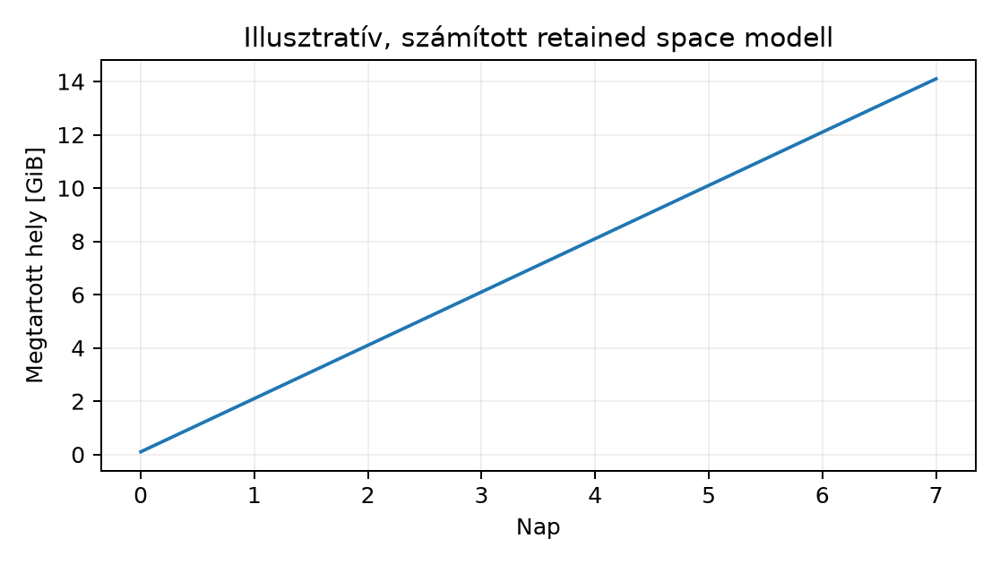

A snapshot az a művelet, amellyel egy tárolórendszer egy adott időpontbeli állapotot rögzít anélkül, hogy a teljes adathalmazt azonnal lemásolná. A gyakorlatban ez azt jelenti, hogy a snapshot nem független másolat, hanem az eredeti adattal közös blokkokra épülő, időbeli állapotreferencia. A snapshot ezért gyors és helytakarékos, de önmagában nem véd a lemezhiba, a pool-szintű sérülés vagy a véletlen törlés ellen. A backup akkor független, ha külön tárolóra vagy legalább külön anonimitással bíró, fizikailag eltérő helyre kerül. A d093-as alfejezetben a snapshotot, a klónt és a send/receive replikációt a filesystem-szintű CoW (copy-on-write) modellben vizsgáljuk.
A snapshot egy olyan olvasható, esetenként írható, időponthoz kötött nézet, amely a tárolórendszer CoW mechanizmusát használja. A Btrfs-ben és az OpenZFS-ben a snapshot a fájlrendszeren belüli logikai objektum (subvolume vagy dataset), amely a kiindulási állapot metadatmutatóit örökli. A módosítás során az eredeti blokkok nem íródnak felül, hanem új blokkok keletkeznek, és a régi blokkok mindaddig megmaradnak, amíg a snapshot hivatkozik rájuk. A Btrfs-ben a snapshot a subvolume-ból jön létre, és -r kapcsolóval read-only verzió is képezhető. Az OpenZFS-ben a snapshot a dataset pillanatképe, és szintén a pool-on belüli hivatkozás.
Az LVM snapshot ettől eltérően blokk-szintű. A hagyományos LVM-thick snapshot külön, előre lefoglalt COW-területen tárolja a snapshot létrehozása után módosított blokkok eredeti tartalmát. Az LVM-thin snapshot ezzel szemben egy thin pool-ban osztozik a forráslogikai kötettel, és a módosított blokkok ugyanabban a pool-ban allokálódnak. A fájlrendszer-szintű Btrfs/ZFS snapshot és a blokk-szintű LVM-thin snapshot is CoW-alapú, de a törlési szemantika, a teljesítményprofil és a klónozási lehetőségek eltérnek. A Btrfs/ZFS snapshot közvetlenül mountolható, nem igényel külön eszközaktiválást; az LVM snapshotot viszont külön device mapper eszközként kell kezelni.
A clone olyan írható leszármazott, amely a kiindulási snapshotból vagy subvolume-ból osztozik az eredeti adatblokkokon. A klón a Btrfs-ben egy snapshot, amelyet nem read-only flaggel hoznak létre, így az új nevében írható. Az OpenZFS-ben a clone a snapshotból létrehozott írható dataset. A klón és a forrás kezdetben ugyanazokra a blokkokra mutat, de a későbbi írások a klónban vagy a forrásban új blokkokat foglalnak le, tehát a közös rész fokozatosan csökken.
A send/receive egy stream-alapú replikációs
mechanizmus. A Btrfs btrfs send egy read-only snapshotból
vagy subvolume-ból generál streamet, amelyet a
btrfs receive a céloldalon hoz létre. Az OpenZFS
zfs send és zfs receive ugyanezt a szerepet
látja el. Az incremental chain a send/receive azon tulajdonsága, hogy
egy korábbi snapshot mint szülő (-p parent) segítségével
csak a két állapot közötti változásokat továbbítja. Ez a láncolat
feltételezi, hogy a céloldalon a szülő snapshot elérhető és
sértetlen.
A snapshot nem foglal le a létrehozás pillanatában a teljes adatmérettel megegyező helyet. A kiindulási adattal közös blokkokat továbbra is az eredeti subvolume/dataset blokkjai adják, a snapshot csak metadatokat és a megőrzött blokkokra mutató hivatkozásokat tartalmaz. Amikor az origin (eredeti) módosul, a CoW miatt az érintett blokkok új fizikai helyre kerülnek, a régi blokkok viszont a snapshot számára megmaradnak. A retained space tehát a snapshot által még hivatkozott, de az originból már újraírt vagy törölt blokkok összessége, plusz a snapshot metadatok.
Egyszerű, hipotetikus kapacitásmodell:
ahol
a snapshot létrehozása óta eltelt napok vagy változási ciklusok száma,
az adott ciklusban módosított és snapshot által megtartott blokkok
mérete (GiB),
a snapshot metadatok. A valóságban a snapshot törlésekor felszabaduló
hely attól függ, hogy hány más snapshot vagy klón hivatkozik még a
blokkra. A Btrfs és a ZFS esetén a btrfs qgroup show vagy
zfs list -o space mutatja a tényleges, allokált és
hivatkozott méreteket; a tényleges futtatás előtt a modell csak
becslés.
Az alábbi ábra egy számított példa: 100 GiB origin, napi 2 GiB módosítás, 7 napig, GiB.

| Nap | Változás [GiB] | Retained space [GiB] |
|---|---|---|
| 0 | 0 | 0.1 |
| 1 | 2 | 2.1 |
| 2 | 2 | 4.1 |
| 3 | 2 | 6.1 |
| 4 | 2 | 8.1 |
| 5 | 2 | 10.1 |
| 6 | 2 | 12.1 |
| 7 | 2 | 14.1 |
A filesystem-szintű snapshot atomikus abban az értelemben, hogy a fájlrendszer metadatainak és a CoW struktúrának egy konzisztens állapotát rögzíti. Ez azonban nem jelenti automatikusan az alkalmazás konzisztenciáját. Ha egy adatbázis-kezelő vagy egy C++ alkalmazás éppen ír, akkor a snapshotba kerülhet olyan állapot, ahol a pufferelt adatok egy része még nem került a háttértárra, vagy egy több fájlból álló művelet félig kész.
A quiesce az alkalmazás vagy a fájlrendszer író
tevékenységének átmeneti leállítása a konzisztens pillanatkép érdekében.
Az egyszerű fájlrendszer-szintű quiesce a fsfreeze:
# labhost d093: root (UID 0), izolált labVM, Btrfs mount /mnt/lab-d093
fsfreeze -f /mnt/lab-d093
trap 'fsfreeze -u /mnt/lab-d093' EXIT
btrfs subvolume snapshot -r /mnt/lab-d093/app /mnt/lab-d093/app-snap-2025-01-01T00:00Z
fsfreeze -u /mnt/lab-d093A fsfreeze kiüríti a fájlrendszer pufferelt írásait,
majd leállítja a további írásokat, így a snapshot utáni újbóli
engedélyezésig nincs félkész fájlrendszer-állapot. Az adatbázisok esetén
ez gyakran kevés; a PostgreSQL például
pg_start_backup()-pal vagy megfelelő backup API-val
biztosítja, hogy a WAL és a data fájlok együttesen visszajátszható
állapotba kerüljenek. A fájlrendszer-szintű snapshot akkor használható
adatbázismentésre, ha az alkalmazás saját tranzakciós logikája a
snapshot előtt flush-t és szükség esetén írási zárat ad.
Az alábbi példa egy izolált labdisken dolgozik, ahol a
lab-d093-btrfs név egyértelműen a labor saját disposable
lemezére mutat. A módosító parancsok csak ezt a disk-et használják.
# labhost d093: root (UID 0), disposable lab disk /dev/disk/by-id/lab-d093-btrfs
# 1) Fájlrendszer és subvolume létrehozása
mkfs.btrfs -L lab-d093-btrfs /dev/disk/by-id/lab-d093-btrfs
mkdir -p /mnt/lab-d093
mount /dev/disk/by-id/lab-d093-btrfs /mnt/lab-d093
btrfs subvolume create /mnt/lab-d093/app
# 2) Alkalmazásadatok írása, majd quiesce és read-only snapshot
cp --reflink=always /opt/lab-d093/app/* /mnt/lab-d093/app/ # (mintaadatok; feltételezett, hogy létezik)
sync
fsfreeze -f /mnt/lab-d093
btrfs subvolume snapshot -r /mnt/lab-d093/app /mnt/lab-d093/app-snap-2025-01-01T00:00Z
fsfreeze -u /mnt/lab-d093
# 3) Írható klón a snapshotból
btrfs subvolume snapshot /mnt/lab-d093/app /mnt/lab-d093/app-clone-lab-d093
# 4) Teljes send/receive egy másik Btrfs kötetre (cél: /mnt/lab-d093-recv)
mkdir -p /mnt/lab-d093-recv
btrfs send /mnt/lab-d093/app-snap-2025-01-01T00:00Z | btrfs receive /mnt/lab-d093-recv
# 5) Újabb snapshot, majd incrementális send a szülőhöz képest
btrfs subvolume snapshot -r /mnt/lab-d093/app /mnt/lab-d093/app-snap-2025-01-02T00:00Z
btrfs send -p /mnt/lab-d093/app-snap-2025-01-01T00:00Z \
/mnt/lab-d093/app-snap-2025-01-02T00:00Z | btrfs receive /mnt/lab-d093-recvVárható kimenet: a btrfs subvolume snapshot parancsok
létrehozzák a snapshotokat és a klónt; a btrfs send a
teljes streamet, az incrementális send a változások
streamjét bocsátja ki. Az ellenőrzéshez a
btrfs subvolume list /mnt/lab-d093 mutatja a subvolume-okat
és azok ID-ját. A btrfs qgroup show a hivatkozott és
kizárólagos méreteket listázza. A snaphotok a
mount -o subvol=/app-snap-2025-01-01T00:00Z /dev/disk/by-id/lab-d093-btrfs /mnt/lab-d093-snap
parancssal olvashatók.
Rollback: a teljes labor után a mountok leválasztása és a labdisk
törlése, valamint a létrehozott könyvtárak eltávolítása. A példában a
trap és a cleanup csak a lab- prefixszel
jelölt objektumokat érinti.
A snapshot önmagában csak akkor működési bizonyíték, ha visszaállítási próbát (restore rehearsal) is elvégeztünk. A gyakorlat a következő lépéseket követeli meg:
Példa checksumra:
# labhost d093: root (UID 0), read-only snapshot mount /mnt/lab-d093-snap
mount -o subvol=/app-snap-2025-01-01T00:00Z /dev/disk/by-id/lab-d093-btrfs /mnt/lab-d093-snap
sha256sum -c /opt/lab-d093/manifest.sha256 || echo "ellenorzes: mismatch"
# Alkalmazásindítás izolált namespace-ben vagy konténerben; itt csak ellenőrző példa:
# systemd-run --scope -p MemoryMax=512M /opt/lab-d093/app --verify-only
umount /mnt/lab-d093-snapA checksum nem bizonyítja az alkalmazás tranzakciós konzisztenciáját,
csak a blokkszintű sértetlenséget. Az OpenZFS-ben a
zpool scrub a checksummal védett blokkok teljes
újraolvasását végzi, és redundáns pool esetén a hibát javítja; a
Btrfs-ben a btrfs scrub hasonló. A restore rehearsal során
érdemes a scrubot a snapshot mount előtt lefuttatni, hogy a hibás blokk
ne hamis sikert adjon.
A snapshotot backupnak nevezni. A leggyakoribb hiba az, hogy a snapshotot kizárólagos védelmi intézkedésként kezelik. Ellenpróba: töröljük a forrás subvolume-ot, vagy szimuláljunk lemezhibát a pool-on. Ha a snapshot ugyanazon a fizikai lemezen van, akkor a meghibásodás a snapshotot is érinti. A független backup akkor igazolt, ha a send/receive stream egy másik poolon vagy gépen landol, és a céloldalon is létezik visszaállított, checksumellenőrzött állapot.
Inkrementális lánc megszakítása. Ha a céloldalon
hiányzik a szülő snapshot, az incrementális send nem alkalmazható.
Tünet: btrfs receive hibát ad, hogy a szülő nem található.
A javítás: a szülő snapshotot előbb teljes senddel vagy újra replikálni,
vagy a retentiont úgy állítani, hogy a lánc minden szülője megmaradjon a
céloldalon, amíg a leszármazottakra szükség van.
Snapshot helyfoglalás alultervezése. A snapshot
kezdetben közel nulla helyet foglal, de ha az origin nagy része módosul,
a retained space jelentősen növekszik. A pool tele lehet annak ellenére,
hogy a logikai adatméret nem nőtt. Diagnosztika:
btrfs filesystem usage vagy zpool list. A
megoldás a snapshot retention rövidítése, a klónok törlése, vagy a pool
bővítése, nem pedig a snapshotok válogatás nélküli törlése.
Alkalmazás quiesce hiánya. A fájlrendszer-szintű
snapshot készítése közben aktív írás esetén a visszaállított állapot
tranzakciósan sérült lehet. Ezt csak úgy lehet ellenőrizni, hogy az
alkalmazást ténylegesen elindítjuk a snapshotból, és a saját ellenőrző
rutinját lefuttatjuk. A fsfreeze önmagában nem helyettesíti
az adatbázis saját quiesce interfészét.
LVM snapshot és Btrfs/ZFS keverése. Az LVM snapshot mountolása device mapper eszközön keresztül történik, a Btrfs/ZFS snapshot mountolása subvolume/dataset path-on. A parancsok és a törlési szemantika nem csereszabatos.
Dokumentálj egy snapshot-visszaállítási és retention-szerződést egy Btrfs subvolume-hoz. Írd le, hogy milyen gyakorisággal készül snapshot, mennyi ideig őrzöd meg, és mi a visszaállítási cél (RPO/RTO). Fogalmazd meg, miért nem elegendő a snapshot önmagában, és milyen send/receive replikációt ír elő a szerződés a független backup érdekében.
Hozz létre a labdisken egy 100 GiB-os Btrfs fájlrendszert, egy
lab-d093-db subvolume-ot, majd készíts belőle read-only
snapshotot lab-d093-db-snap-2025-01-01T00:00Z néven. Végezz
btrfs send teljes replikációt a
/mnt/lab-d093-recv célra. Készíts egy második snapshotot,
módosíts a subvolume-on, és végezz incrementális sendet -p
kapcsolóval. Ellenőrizd a btrfs subvolume list és a
btrfs filesystem usage kimenetét. A feladat végén a
snapshotokat és a cél replikációt csak a lab- prefixszel jelölt
objektumokra takarítsd.
Szimuláld azt a hibát, hogy az incrementális receive célján hiányzik a szülő snapshot. Próbálj meg egy incrementális streamet fogadni, figyeld a hibaüzenetet, majd javítsd a láncot úgy, hogy a szülő snapshotot először teljes senddel replikálod, és csak utána alkalmazod az incrementális streamet. Végül hajts végre restore rehearsal-t: mountold a céloldali snapshotot read-only, ellenőrizd egy ismert fájl checksumját, és dokumentáld a postconditiont.
A retention-szerződés például: napi 1 read-only snapshot, 7 napig
megőrizve, heti 1 snapshot 4 hétig, havi 1 snapshot 3 hónapig. RPO: a
snapshot készítés gyakorisága (1 nap), RTO: a snapshot mount +
alkalmazásindítás + ellenőrzés időtartama (cél 30 perc). A snapshot
önmagában nem backup, mert ugyanazon a pool-on osztozik a forrással; a
szerződés előírja, hogy a napi snapshotot btrfs send
streamként egy másik gépre vagy legalább másik poolra kell replikálni,
és ott 30 napig megőrizni. A visszaállítási próbát hetente kell
elvégezni. Postcondition: a szerződés tartalmazza a
snapshot-gyakoriságot, a retentiont, a replikációs targetet és a
rehearsal gyakoriságát.
# labhost d093: root (UID 0), lab disk /dev/disk/by-id/lab-d093-btrfs
mkfs.btrfs -L lab-d093-btrfs /dev/disk/by-id/lab-d093-btrfs
mkdir -p /mnt/lab-d093 /mnt/lab-d093-recv
mount /dev/disk/by-id/lab-d093-btrfs /mnt/lab-d093
btrfs subvolume create /mnt/lab-d093/lab-d093-db
# mintaadat: /opt/lab-d093/db-data; ellenőrizd, hogy létezik
cp -a /opt/lab-d093/db-data/. /mnt/lab-d093/lab-d093-db/
fsfreeze -f /mnt/lab-d093
btrfs subvolume snapshot -r /mnt/lab-d093/lab-d093-db /mnt/lab-d093/lab-d093-db-snap-2025-01-01T00:00Z
fsfreeze -u /mnt/lab-d093
btrfs send /mnt/lab-d093/lab-d093-db-snap-2025-01-01T00:00Z | btrfs receive /mnt/lab-d093-recv
# módosítás
dd if=/dev/urandom of=/mnt/lab-d093/lab-d093-db/new-file bs=1M count=10
btrfs subvolume snapshot -r /mnt/lab-d093/lab-d093-db /mnt/lab-d093/lab-d093-db-snap-2025-01-02T00:00Z
btrfs send -p /mnt/lab-d093/lab-d093-db-snap-2025-01-01T00:00Z \
/mnt/lab-d093/lab-d093-db-snap-2025-01-02T00:00Z | btrfs receive /mnt/lab-d093-recv
# Ellenőrzés
btrfs subvolume list /mnt/lab-d093
btrfs filesystem usage /mnt/lab-d093
# Cleanup: lab- prefixszel jelölt mount és disk
umount /mnt/lab-d093 /mnt/lab-d093-recv
wipefs -a /dev/disk/by-id/lab-d093-btrfsPostcondition: a forrás oldalon két snapshot és egy módosított
subvolume, a céloldalon ugyanaz a két snapshot; a
btrfs subvolume list mindkét oldalon mutatja a megfelelő
subvolume-okat; a btrfs filesystem usage a várt allokációt
mutatja. A cleanup után a labdisk üres, nincs mount.
Először szimuláljuk a hiányzó szülőt: töröljük a céloldali szülő snapshotot.
# labhost d093: root (UID 0), cél mount /mnt/lab-d093-recv
btrfs subvolume delete /mnt/lab-d093-recv/lab-d093-db-snap-2025-01-01T00:00Z
# Ezután az incrementális receive hibát ad, mert a szülő hiányzik
btrfs send -p /mnt/lab-d093/lab-d093-db-snap-2025-01-01T00:00Z \
/mnt/lab-d093/lab-d093-db-snap-2025-01-02T00:00Z | btrfs receive /mnt/lab-d093-recv
# Várt hiba: parent snapshot nem található a célonA javítás lépései:
# 1) A szülő teljes replikálása újra
btrfs send /mnt/lab-d093/lab-d093-db-snap-2025-01-01T00:00Z | btrfs receive /mnt/lab-d093-recv
# 2) Az incrementális stream ismételt fogadása
btrfs send -p /mnt/lab-d093/lab-d093-db-snap-2025-01-01T00:00Z \
/mnt/lab-d093/lab-d093-db-snap-2025-01-02T00:00Z | btrfs receive /mnt/lab-d093-recv
# Restore rehearsal: read-only mount és checksum
mkdir -p /mnt/lab-d093-recv-snap
mount -o subvol=/lab-d093-db-snap-2025-01-02T00:00Z /dev/disk/by-id/lab-d093-recv-btrfs /mnt/lab-d093-recv-snap
sha256sum -c /opt/lab-d093/manifest.sha256
umount /mnt/lab-d093-recv-snapPostcondition: a céloldalon mindkét snapshot jelen van, az incrementális receive sikeresen lezajlott, a read-only mount és a checksum-ellenőrzés hiba nélkül lefutott, a snapshot tartalma visszaállítható. A hibaüzenet megfigyelése és a javítás dokumentálva van.
A snapshot időpontra rögzített, CoW-alapú állapotreferencia, nem független backup; a független védelemhez send/receive replikáció vagy másik tároló szükséges. Az LVM-thin blokk-szintű, a Btrfs/ZFS fájlrendszer-szintű snapshot; a klón írható, a send/receive incrementális lánca parent snapshot-ot igényel. A snapshot retained space a módosított blokkokkal nő, a kapacitást a pool szintjén kell figyelni. Az alkalmazás konzisztenciájához quiesce szükséges, a visszaállítási próba és a checksum hitelesíti a recovery képességet.
Az alábbi források stabil kiindulópontok a Btrfs, OpenZFS és LVM snapshot-kezeléshez, de jelen kérésben nincs webes keresőeszköz, ezért nem állítom, hogy a linkek tartalmát megnyitottam vagy a támogatási állapotot ellenőriztem:
Ellenőrzési hiányok: a Btrfs send/receive és a fsfreeze
pontos viselkedése, az LVM-thin snapshot és az OpenZFS verziófüggő
támogatottsága, valamint a pool-kapacitás mérési értékei nem
ellenőrzöttek a jelen kérésben. A kidolgozott példák parancsait a
tananyaggenerátor nem futtatja; a kimenetek várt, illusztratív
jellegűek.